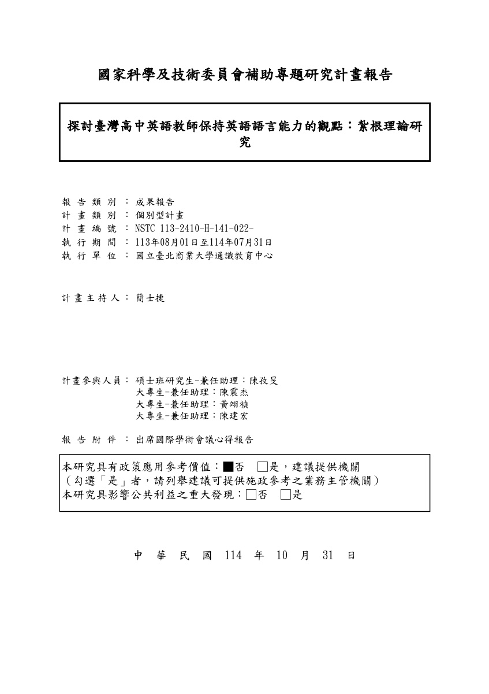

國企個案分析
2026
France vs. Ultra-Fast Fashion: Shein & Temu
成大國企所 · 第 1 組
個案內容
分析法國為何、又如何對 Shein、Temu 等超快時尚業者推出新規範，以及這些規範對快時尚商業模式的影響，最後整理對國際企業的啟示。全程英文報告。

研究助理
2024.08 – 2025.07
臺灣高中英語教師保持英語能力：紮根理論研究
NSTC 113-2410-H-141-022
研究內容
以深度半結構式訪談 30 位高中英語教師，用紮根理論分析他們在教學生涯中如何看待、維持自己的英語能力。成果已於 2025 年東京 ACEID 國際研討會發表。
我的角色整理全部訪談紀錄與逐字稿、建立資料分類架構，並協助全部受訪者的訪談經費申請。
Skills in Business Negotiation
小組組長
2026.09 – NOW
特斯拉進入印尼市場分析
國際企業管理課程 · 成大國企所
分析內容
帶領 5 人小組，從市場、產業政策、供應鏈與消費者可負擔性四個面向，評估印尼對特斯拉的投資吸引力。
我的角色負責市場分析與進入方案（第 11–22 頁）：電動車需求、競爭對手、五力分析、購買力、關稅法規，以及進入雅加達的方案。
建議先以進口整車加上自營的銷售與服務據點進入大雅加達，把出口當作高端市場測試，再評估走向在地組裝。
Research Direction
碩士研究方向
NCKU · IB
科技企業的海外市場進入模式
策略聯盟 · 跨國併購
研究問題
科技企業跨國擴張時，自身的國際經驗與地主國的不確定性，如何影響它在策略聯盟與併購之間的選擇？